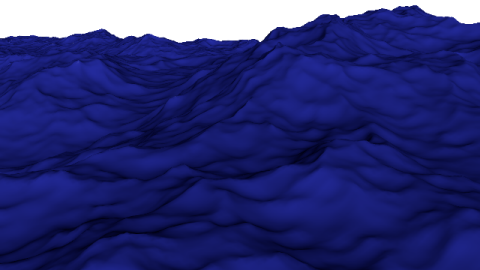
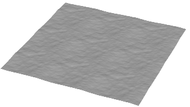
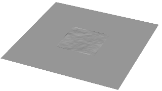

使用 BOSS 频谱波解算器在水面上创建风驱动的波浪。您可以创建从平静水面到飓风状况的效果。

若要应用该解算器，请参见添加和编辑 BOSS 解算器。
- 启用(Enable)
- 禁用后就不会起作用，无需将其从场景中移除。
全局属性(Global Attributes)
- 开始帧(Start Frame)
- 该解算器影响的第一帧。
- 周期(Periodic)
- 在空间中重复显示波浪图案。这样可以使用较小的面片对较大的网格平面进行变形，但平铺的重复可能会很明显。

启用和禁用“周期”(Periodic)
- 面片大小 X (m)(Patch Size X (m))、面片大小 Z (m)(Patch Size Z (m))
-
要计算的水面的水平尺寸，位于世界原点中心。这不一定与解算器的输入网格的大小相同：
- 如果面片和网格的大小不同，并且您希望将缓存的 EXR 文件用作贴图，则需要调整最终网格上的 UV 投影以正确达到效果。
- 如果面片大于网格，则超过网格尺寸的面片部分会进行计算但不可见。这会执行不必要的计算，而且还会浪费磁盘空间来存储缓存文件。但是，您可以利用较大的面片为输入网格设置动画，以显示面片的不同区域，例如，移动的船周围的曲面。此外，巨浪中波长较长的大浪需要使用较大的面片。
- 如果面片小于网格，则确保“周期”(Periodic)已启用，以便使整个网格变形。
- 如果要结合使用 BOSS 频谱波和 BOSS 波解算器，则最好将面片大小设置为与网格的大小相同。这是因为，如果大小不同，则 BOSS 波解算器的结果会被挤压或拉伸以适配网格，并且将与频谱结果不一致。
与其他动力学系统类似，相对于 Maya，BOSS 使用 100:1 的比例。当 Maya 中“线性”(Linear)工作单位首选项设置为默认值“厘米”(centimeter)时，BOSS 将 1 栅格单位解释为 1 米。若要使用不同的比例，您可以设置“空间比例”(Space Scale)和/或更改“重力(m/s2)”(Gravity m/s2)。
-
- 空间比例(Space Scale)
- X 和 Z 各方向上面片的线性比例因子。如果值介于 0 和 1.0 之间，则收缩结果；如果值大于 1.0，则展开结果。如果在缩放后波浪移动过快或过慢，可以调整“重力(m/s2)”(Gravity m/s2)或使用表达式向“时间”(Time)输入添加倍增。
- 频谱类型(Frequency Spectra Type)、方向谱类型(Directional Spectra Type)
- 从频率和方向的各种已发布谱中选择。通常，“频谱类型”(Frequency Spectra Type)为 TMA 和“方向谱类型”(Directional Spectra Type)为 Jonswap 组合对于开阔的海洋是很好的选择，但您可以尝试其他选项以实现多种效果。请注意，可用模型基于在不同条件下得出的测量值，并非每个组合都适用于任何给定情况。您可能需要调整“波高度”(Wave Height)、“空间比例”(Space Scale)和其他属性，具体取决于谱类型。
- 种子(Seed)
- 此值用于初始化伪随机数生成器。更改此值可生成具有相同总体特征的不同结果。
- 分辨率 X (Resolution X)、分辨率 Z (Resolution Z)
- 用于计算波高度的栅格的分辨率。此项还可以控制用于缓存的 EXR 文件的分辨率。值越高，细节越多，但计算时间会延长，并且需要更多磁盘空间进行缓存。匹配面片的纵横比可确保采样均匀，且不会在任何方向上挤压或拉伸。
模拟属性(Simulation Attributes)
- 重力(m/s2)(Gravity m/s2)
- 由重力产生的加速度。默认值 9.8 表示地球表面的重力强度（以 m/s2 为单位）。值越小，产生的波浪越高且移动速度越慢，值越大，产生的波浪越低且移动速度越快。可以调整此值以更改比例。
- 海洋深度(m)(Ocean Depth (m))
- 用于计算波浪运动的水深。在浅水中，波浪往往较长、较高及较慢。
- 波高度(Wave Height)
- 波高度的人为倍增。如果值介于 0.0 和 1.0 之间，则降低波高度，如果值大于 1，则增加波高度。
- 使用水平置换(Use Horizontal Displacement)
- 在水平方向和垂直方向置换网格的顶点。这会导致波的形状更尖锐、更不圆滑。它还会生成适合向量置换贴图的缓存，因为 3 个轴上都存在偏移。
- 波大小(Wave Size)
- 控制水平置换量。可调整此值以避免输出网格中出现自相交。
- 毛细波大小(cm)(Capillary Size (cm))
- 毛细波（曲面张力传播的较小、较快的涟漪，有时可在重力传播的较大波浪顶部看到）的最大波长。毛细波通常仅在比例较小且分辨率较高的情况下可见，因此在许多情况下，可以让此值保留为 0.0 以避免执行不必要的计算。
- X 轴方向漂移速度(m/s)(Drift Velocity in X (m/s))、Z 轴方向漂移速度(m/s)(Drift Velocity in Z (m/s))
- 修改波浪运动以使其行为就像是水按指定的速度移动。这样可以在流动的水（例如，河流或气流）上创建波浪。
- 短缩放中止(M)(Short Scale Cutoff (m))、长缩放中止(M)(Long Scale Cutoff (m))
- 要包含在计算中的最小和最大波长。
- 时间(Time)
- 对波浪进行解算的时间。通常，此项直接连接到场景时间，但您可以断开连接，然后使用表达式或其他控件来减慢或加快波浪运动。
风属性(Wind Attributes)
- 风速(m/s)(WindSpeed (m/s))
- 生成波浪的风的速度。微风可能在 2 m/s 左右，飓风可达到 30 m/s 或更高（但请注意，这么高的风速需要非常大的面片才能包含最长和最高的波浪）。
- 风向(度)(Wind Direction (degrees))
- 生成波浪的风的方向。
- 0 为 -X 方向。
- 90 为 -Z 方向。
- 180 为 +X 方向。
- 270 为 +Z 方向。
- 风吹程距离(km)(Wind Fetch Distance (km))
- 风应用于水面时的距离。距离较小时，波浪往往会较短、较低及较慢。超过阈值距离（取决于风速、海洋深度和其他因素）时，波浪会充分完善，其总体特征不会发生显著变化。
反射波属性(Reflection Waves Attributes)
- 使用碰撞对象(Use Colliders)
- 创建与任何影响碰撞的波的反射（“BOSS 几何特性”(Boss Geo Properties)和“BOSS EXR 影响”(Boss EXR Influence)）。
- 反射高度(Reflection Height)
- 反射波的高度的倍增。如果值大于 1.0，则将增加高度，如果值介于 0.0 和 1.0 之间，则将降低高度。
- 反射大小(Reflection Size)
- 反射波的水平置换量的倍增。可调整此值以避免输出网格中出现自相交。
- 反射衰退宽度(Reflection Decay Width)
- 控制抑制反射波的域边界处区域的宽度。这可避免域边界产生反射。值表示面片大小的小数，例如，0.1 表示 10% 的面片大小沿每个边界。
- 反射衰退 Alpha(Reflection Decay Alpha)
- 控制沿面片边界的波抑制的平滑度。值过高可能会导致出现可见瑕疵。
- 反射摩擦(Reflection Friction)
- 反射波的速度的阻尼因子。值为 0.0 时波自由传播，值为 1.0 时几乎立即使波衰减。
- 反射漂移系数(Reflection Drift Factor)
- 应用于反射波的“X 轴方向漂移速度(m/s)”(Drift Velocity in X (m/s))和“Z 轴方向漂移速度(m/s)”(Drift Velocity in Z (m/s))量的倍增。
- 反射风系数(Reflection Wind Factor)
- 应用于反射波的“风速(m/s)”(WindSpeed (m/s))量的倍增。
- 反射毛细波大小(厘米)(Reflection Capillary Size (cm))
- 能够产生反射时涟漪的最大波长。
泡沫属性(Foam Attributes)
- 启用(Enable)
- 在缓存解算器的输出时生成表示泡沫的贴图。请参见生成 BOSS 泡沫贴图。
- 泡沫扩散速率(Foam Diffusion Rate)
- 控制泡沫扩散和减少的速度。
- 尖点比例(Cusp Scale)
- 控制泡沫量。
- 尖点最小值(Cusp Min)、尖点最大值(Cusp Max)
- 指定创建泡沫时应用的尖点值范围。
- 使用速度(Use Speed)、速度最小值(Speed Min)、速度最大值(Speed Max)
- 用于限制仅在速度处于指定范围内的区域创建泡沫。
缓存属性(Cache Attributes)
您可以使用标记
<project>、
<scene>、
<object>、
<influence>、
<frame> 和
<f> 来定义缓存文件夹和文件名。您还可以使用 csh 样式指定标记，例如，
$frame。
使用标记保存缓存时，也会在场景中存储完全解析路径的副本，用于播放缓存。这意味着如果您使用一个新名称保存场景或将场景保存在不同的项目中，缓存的路径不会丢失。如果稍后重写缓存文件，将使用标记的当前值并更新解析路径。
- 使用缓存(Use Cache)
- 播放时从缓存文件读取，而不是重新计算影响。
- 导出缓存(Export Cache)
- 播放时写入缓存文件。您可以手动启用此项，以在播放和调整值时覆盖缓存文件。
- 缓存文件夹(Cache Folder)
- 解算器的所有缓存文件的位置，如果使用了泡沫和速度，则包含泡沫和速度的缓存文件的位置。手动编辑路径时，忽略最后的“/”字符。
- 缓存名称(Cache Name)
- 主波缓存的文件名。
- 缓存速度(Cache Velocity)
- 创建速度的缓存文件。
- 速度缓存名称(Velocity Cache Name)
- 速度缓存的文件名
- 泡沫缓存名称(Foam Cache Name)
- 泡沫缓存的文件名
诊断(Diagnostics)
- 调试(Debug)
- 设置在“输出窗口”(Output Window)中输出的消息的详细级别。
- 0 = 无消息。
- 1 = 仅错误消息。
- 2 = 错误消息和警告消息。
- 3 = 错误消息、警告消息和信息消息。